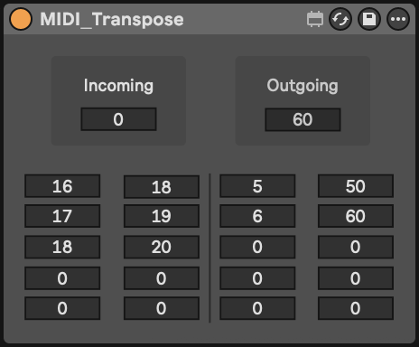

MIDI Transpose 09.24.2025
In early 2022 I began collecting and repairing musical instruments and recording paraphernalia sourced from thrift stores in the general Seattle area. Many of these units featured rudimentary MIDI implementation, not easily integrated with modern software that assumes built-in editing of MIDI mapping. To solve this problem, I created MIDI_Transpose.amxd, a ten channel Max device for Ableton Live that allows simple remapping of MIDI input. This device is primitive, but proved invaluable when integrating particularly old and/or cheap hardware into a modern DAW-based workflow.
